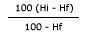

Nossos Serviços - Secagem de Grãos
Secagem é a operação que tem por finalidade reduzir o teor de umidade do produto a nível adequado à sua estocagem por um período prolongado, mantendo ao máximo a sua qualidade
A operação correta dos secadores permite economizar tempo, mão de obra, combustível, e reduzir os riscos de incêndios. A umidade do produto após secagem deve ser de acordo com os valores recomendados para armazenagem.
Para secar os grãos de maneira correta, é necessário fazer antes uma pré-limpeza do produto, objetivando retirar o excesso de impurezas e matérias estranhas do produto. Essa operação é importante porque as eliminações desses materiais vão permitir obter um maior rendimento do secador, maior economia de combustível e menores riscos de incêndios.
Processo de Secagem
A secagem, seja por qualquer sistema, baseia-se na propriedade pela qual o aumento da temperatura do ar diminui a sua umidade e o torna capaz de absorver a umidade disponível em outros corpos. O teor de umidade dos grãos, então acompanhará a diminuição de umidade do ar quando os submetemos a uma corrente de ar quente, tendendo ao (equilíbrio higroscópico).
Modalidades de Secagem
Secagem Natural
São métodos aplicados pela incidência da radiação solar tem-se a redução do teor de umidade dos produtos. No Brasil esta modalidade tem sido utilizada na secagem de: milho e feijão por pequenos agricultores, café em terreiros e cacau em barcaças. A grande desvantagem dessa modalidade está na dependência das condições climáticas.
Secagem Artificial
Consiste no emprego de artifícios para aumentar a velocidade do processo de secagem, sendo estes disponibilizados em equipamentos denominados secadores. A nível comercial, os secadores podem apresentar sob diferentes configurações, contendo por acessórios: sistema de aquecimento do ar - fornalhas a gás ou a lenha, sistema de movimentação do ar - ventiladores e sistema de movimentação dos grãos - elevadores de caçambas, transportadores helicoidais e fitas transportadoras, a secagem pode ser executada em baixa temperatura e, ou, em altas temperaturas.
Sistemas de Secagem
Contínuos
O produto entra úmido no secador e sai seco e relativamente frio, passando apenas uma vez pelo secador. Estes secadores do tipo cascata, apenas conseguem operar em contínuo quando a umidade de entrada do produto não ultrapassa a 18% (BU).
Intermitentes
Para teores de umidades de entradas excedentes à 18%, consegue-se a secagem por operação em intermitente, para a qual, é necessário que o produto passe por diversas vezes pelo secador antes de completar a secagem.
Estimativa do tempo de secagem
Não é possível calcular, com exatidão, o tempo de secagem, devido a muitas variáveis que envolvem o processo. Os elementos variáveis incluem: variações da umidade relativa a temperatura do ar ambiente, a umidade do ar secante que sai do secador, após sua passagem pela massa de grãos, grau de limpeza dos grãos, intensidade do fluxo do ar secante, etc. Se não houver variações daqueles fatores e o ar secante, ao sair do secador, se apresentasse sempre saturado, o problema seria mais simples. E suficiente dizer que; a secagem dos grãos não é uma ciência exata e, assim, exige uma constante vigilância do processo.
Perda de peso na secagem
Na secagem dos grãos ocorre uma perda de peso, que é o resultado da evaporação de parte de água existente no produto.E importante considerar o seguinte: Quando é reduzido certa percentagem de umidade, o peso dos grãos não diminui na mesma proporção porque a quantidade da matéria seca não é afetada. No exemplo apresentado, quando reduzimos a umidade dos grãos, em 10% (25-15%), a percentagem de perda de peso é 11,8%. A percentagem de água a ser removida poderá ser facilmente calculada pela fórmula seguinte:
% de perda de peso=
*Hi = teor de umidade inicial
*Hf = teor de umidade final
Tipos de Secadores
Secador Tipo Cascata
São aqueles que têm o corpo formado por calhas. As calhas são montados em módulos colocados uns sobre os outros, formando o corpo do secador. O produto desce entre as calhas e o ar quente atravessa a camada de grãos, retirando a sua umidade. O produto chega no sistema de descarga com teor de umidade uniforme. As calhas possuem uma extremidade aberta e a outra fechada para forçar a passagem do ar pelo produto.
Secador de Fluxos Cruzados
São aqueles em que o produto fica em movimento entre as duas chapas metálicas perfuradas. O ar de secagem atravessa a coluna de produto, passando pelos furos das chapas. Geralmente nesse tipo de secador há uma tendência de o produto que está em contato com ar mais quente secar mais. Se a desuniformidade do teor de umidade for muito grande, a conservação do produto durante o armazenamento poderá ficar prejudicada. O controle da temperatura de secagem no secador de fluxos cruzados exige maior cuidado do operador porque o produto que desce do lado da entrada do ar fica durante todo o tempo exposto a temperatura mais alta.